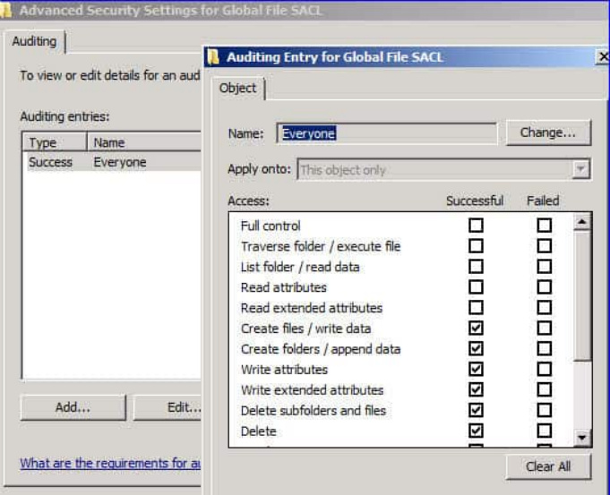

Seguretat física 2.0


Que es el HASH
Una funció hash és una funció matemàtica que fa correspondre una representació de mida fixa a un missatge m de mida variable. Aquesta representació té de 128 a 512 bits (segons la funció que s’empri) i s’anomena valor resum del missatge.
El valor hash identifica, pràcticament de manera unívoca, un fitxer qualsevol.
Una característica molt important de les funcions hash és que qualsevol canvi que es produeixi sobre el fitxer comporta un canvi total i impredictible del valor hash. Els algorismes SHA-2 (desenvolupat per la NSA, que inclou variants populars com SHA-256 i SHA512) i SHA-3 (estandarditzat pel NIST) són els que més es fan servir avui dia per implementar les funcions resum. Algorismes històrics com MD5 (128 bits) i SHA-1 (160 bits) han quedat completament obsolets i desaconsellats a causa de vulnerabilitats greus i col·lisions demstrades. Actualment, la família SHA-2 ofereix un balanç ideal entre velocitat i seguretat per a la verificació d'integritat de dades, la signatura digital i la protecció de sistemes.
Pàgina d’exemple on es pot veure els hash de git hub desktop https://github.com/git-for-windows/git/releases/
Llistes de control d’accés Principi de privilegi mínim : És aconseguir que l’usuari accedeixi únicament a allò que necessiti. Una vegada s’ha identificat, el sistema controla ( autoritza ) l’accés als recursos del sistema informàtic tot registrant ( auditant ) com s’utilitza cada recurs.
Autenticació : mecanisme de verificació de la identitat del usuari o procés Autorització : proces per el qual el sistema autoritza a l’usuari a accedir als recursos Registre : log de l’ús que l’usuari fa dels recursos del sistema informàtic
El control d’accés , per tant, determina quins privilegis té un usuari dins del sistema informàtic i a quins recursos té accés.
Matriu de control d’accés - ACL
Matriu de control d’accés o matriu d’accés: model formal de seguretat computacional, que inventaria els drets de cada subjecte respecte als objectes del sistema.
Llistes de control d’accés ACL: Les matrius d’accés no solen estar guardades als sistemes informatics. El que es fa és associar a cada objecte una llista amb tots els dominis que poden tenir-hi accés i com ho fan.


Polítiques d’emmagatzematge
Existeixen quatre polítiques bàsiques d’emmagatzematge, depenent d’on siguin les dades. Polítiques d’emmagatzematge local en els equips de treball: Inclou almenys els aspectes següents:
Quin tipus d’informació es pot guardar en els equips locals Durant quant de temps Ubicació dins de l’arbre de direcotris de l’equip Normativa d’emmagatzematge de documents personals.
-
Política d’emmagatzematge a la xarxa corporativa:
-
Els servidors d’emmagatzematge disponibles a la xarxa corporativa estan configurats per poder guardar i compartir informació de l’empresa. Els controls d’accés són definits per direcció i els responsables de sistemes. Ha de cobrir els aspectes següents: Tipus d’informació emmagatzemada Persones encarregades de l’actualització d’aquesta informació
-
Els treballadors poden disposar d’espais personals. Per controlar aquesta informació s’han d’especificar polítiques que determinin els mateixos aspectes que en el cas de l’emmagatzematge local.
Política sobre l’ús de dispositius externs. Política de còpies de seguretat
Polítiques d’emmagatzematge
Política sobre l’ús de dispositius externs: permeten l’emmagatzematge extra d’informació per tal de transportar-la a una altra ubicació o simplement de disposar d’una còpia de seguretat personal. Aquesta política inclou almenys els aspectes següents:
-
Si està permès o no l’ús d’aquests dispositius.
-
En cas afirmatiu, quin tipus d’informació no es permet emmagatzemar en cap cas, com, per exemple, dades personals de clients. Quins mètodes d’esborrat s’han de fer servir quan aquesta informació ja no es necessita.

Polítiques d’emmagatzematge
Política de còpies de seguretat: Tot pla de contingència d’una empresa ha de comptar amb una planificació adequada de les còpies de seguretat que es realitzen, ja que la pèrdua de dades pot posar en perill la continuïtat del negoci. Alguns dels requisits que ha de complir la planificació de còpies de seguretat són: Identificar les dades que han de ser preservades. Establir la freqüència amb què es faran les còpies. Disposar el magatzem físic per a les còpies. Cercar la probabilitat d’error mínima. Controlar els suports que contenen les còpies.
Planificar la restauració de les còpies
Provar el sistema exhaustivament per comprovar la seva correcta planificació i l’eficàcia dels mitjans disposats.
Definir la vigència de les còpies Controlar l’obsolescència dels dispositius d’emmagatzematge Quan els suports de memòria arriben al final de la seva vida útil (segons la política de còpies de seguretat), s'han d'esborrar de forma segura o destruir per garantir que la informació no es pugui recuperar mai més.
Còpies de seguretat i imatges de suport
Una bona política de còpies de seguretat és clau per tenir segura la informació de l’organització Motius per fer còpies de seguretat:
Protegir la informació contra una fallada del sistema Protegir la informació dels usuaris contra esborraments accidentals Protegir la informació contra atacs per part de tercers
Tipus de còpies de seguretat Completa : Es fa una còpia de tota la informació Incremental: Nomes es guarden els fitxers modificats des de l’ultima còpia de seguretat Diferencial: Guarda totes les dades que han canviat des de la darrera còpia de seguretat completa.
| Criteri | Còpia incremental | Còpia diferencial |
|---|---|---|
| Punt de referència | Darrera còpia (completa o incremental) | Darrera còpia completa |
Còpies de seguretat i imatges de suport
| Criteri | Còpia incremental | Còpia diferencial |
|---|---|---|
| Punt de referència | Darrera còpia (completa o incremental) | Darrera còpia completa |
| Temps de suport | Ràpid | Augmenta gradualment cada dia |
| Ús d'espai | Mínim | Major que la incremental |
| Arxius necessaris per restaurar | Completa + Totes les incrementals | Completa + Darrera diferencial |
| Risc de fallada en restaurar | Major (depèn de tota la cadena) | Menor (només depèn de dos arxius) |
Polítiques de còpies de seguretat
La regla 3-2-1 és l'estàndard d'or de la seguretat de la informació. Tot i que va ser formulada fa més de dues dècades, continua sent la columna vertebral de qualsevol pla de continuïtat de negoci, adaptant-se a les amenaces i tecnologies actuals.
Què és exactament la regla 3-2-1?
-
3 còpies de les dades: Mantenir les dades originals més almenys 2 còpies de seguretat addicionals.
-
2 suports diferents: Desar aquestes còpies en almenys dos tipus de tecnologia o mitjans d'emmagatzematge diferents (per exemple, un disc local SSD/NAS i emmagatzematge en l'immaterial/núvol).
- 1 còpia fora de la seu (Offsite): Guardar com a mínim una de les còpies en una ubicació física o lògica diferent per protegir-se de desastres locals (incendis, robatoris o inundacions).